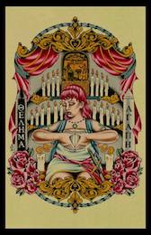
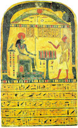

Ecclesia Gnostica Catholica (E.G.C.), or the Gnostic Catholic Church, is the ecclesiastical arm of Ordo Templi Orientis. Knights Tempar Oasis celebrates the rituals of the E.G.C. on a regular basis.
The main ritual of the E.G.C. is the Gnostic Mass, or Liber XV. Knights Templar Oasis celebrates the Gnostic Mass on the 2nd and 4th Sunday of each month. These events are generally open to the public, and all are welcome to attend. Please see our calendar for specific event details.
If you are interested in lay membership or have interest in E.G.C. at the national level, please see E.G.C. - US Grand Lodge.
